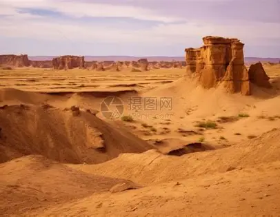
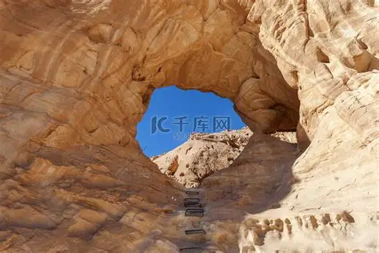
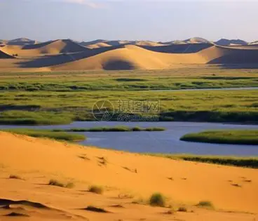
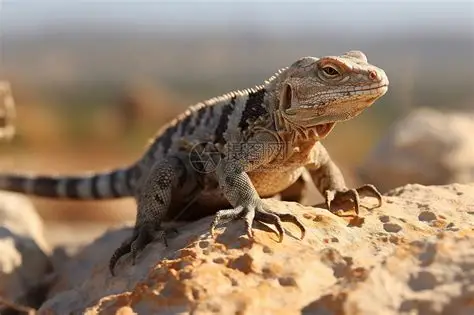
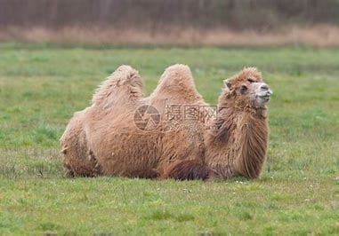
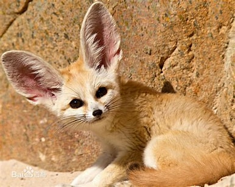
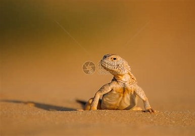

荒漠是地球上最严酷的陆地环境之一，水资源极度匮乏，昼夜温差极大。生活在其中的动物进化出了惊人的适应能力，如高效储水、耐旱、夜行等习性。骆驼、耳廓狐、沙漠蜥蜴等都是典型代表。

白天高温可达50℃以上，夜晚快速降温，风沙频繁。这里生活着适应极端温差的动物，如耳廓狐、沙漠蜥蜴等，它们多为夜行性，善于在沙地快速移动和隐藏。

温度相对稳定，许多小型哺乳动物和爬行动物在此挖洞筑巢。它们白天躲藏在凉爽的地下，夜晚外出觅食，形成独特的“地下生态网络”。

荒漠中稀有的水源地是动物聚集的核心区域。骆驼、羚羊等大型动物依赖绿洲补充水分，形成了局部高密度生物群落。
荒漠动物进化出高度特化的生理结构，以应对水资源匮乏、高温、温差大等挑战。


保护级别：国家二级
沙漠之舟，驼峰储存脂肪，能长时间耐饥渴，是荒漠中最著名的适应者。

保护级别：三有
耳朵巨大，适应沙漠高温环境，夜行捕猎。

保护级别：三有
体色与沙地一致，善于在沙中隐藏和移动。
荒漠生态系统极其脆弱，一旦遭到破坏，恢复起来非常困难。这些适应力极强的动物是荒漠生态平衡的重要维持者。保护荒漠动物，不仅能维护生物多样性，还能防止土地进一步荒漠化，减少沙尘暴对周边地区的影响，最终保护人类自身的生存环境。